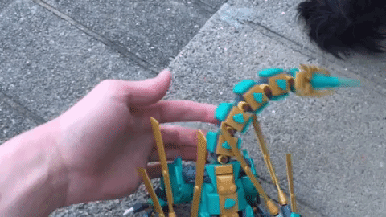
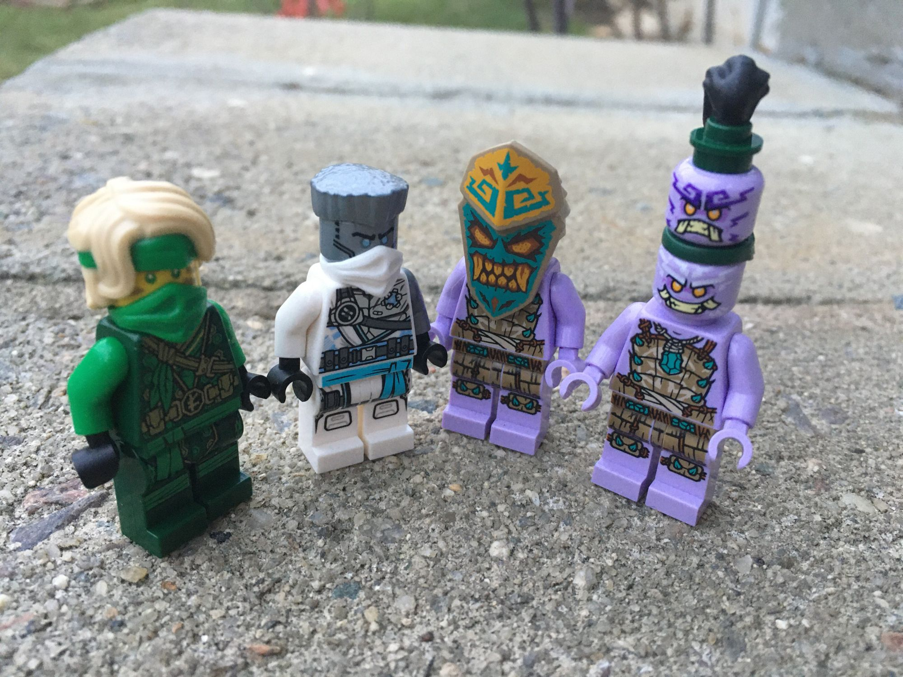

If Infomercials told the truth
Mar 25, 2021
rioforce
NINJAGO 71746 Jungle Dragon

LEGO Ninjago 71746, Jungle Dragon, is a really neat set. The first thing you notice about this set is undoubtedly its "dragon" (which, honestly, it looks more like a lizard to me, but hey, they're all related, right?). Quite the stand-out build!
The dragon is mostly articulated, with ten articulation points, plus a tail, mouth, toe-nails, and wings. The legs are clicky-joints, the wrists and neck are mini-ball-socket joints, and the tail has a series of rotating "hinges". I think it's a pretty cool tail, definitely fun to play with.
Speaking of the legs, I did mention they were "clicky joints." While this is undoubtedly better for longer lasting posing and stability, it's not so useful for animation. This makes it difficult to have a smooth walk cycle.

The clicky joints also seemed to aggressive for this model in general. It's somewhat fragile where the parts of the body connect (the tail/back legs and the front half are connected by eight studs). This part (on both sides) fell off quite a few times while I was testing this product and even while I was just photographing it for this review.

Many other decorative parts tended to fall off as well, but the structural part was my main issue. With this piece holding the dragon together, it was hard to play with it in one piece without constantly rebuilding.
That said, the details in this set are fantastic. It also comes with four minifigures and one mini-flying speeder (with stud launchers). The dragon is the main attraction, but without the minifigures, I would have been disapointed. As mentioned previously, the Jungle Ninja are quite detailed and a great look.
All in all, great set. Lots of fun to be had, even if it would need to be motified and reinforced slightly for any serious animation. I'd recommend replacing the clicky leg joints with large ball-socket joints and adding some more connections somehow to keep the back-end on the dragon.
What do you think? How's this set look to you?